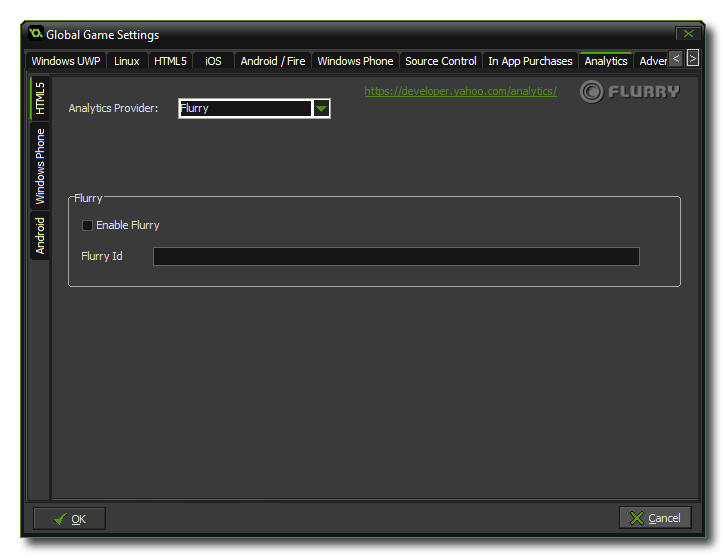

 This tab permits
you to add analytics to your game, permitting you to use certain
third-party products to track your game and its sales or plays.
There are three sub-tabs for this, one for HTML5, one for Windows
Phone and one for Android.
For all available platforms you can specify whether to use Flurry Analytics or
Google
Analytics to track your game, but due to the nature of these
functions, you can only have one active at a time, so make sure
that you check the correct one! Once you have flagged the Enable
Flurry or Enable Google Analytics check-box for your
analytics provider, you should also add the unique ID that you have
been assigned into the appropriate area for HTML5, and for Android,
you will be prompted to install the appropriate extension (and you
add the ID value into the extension functions). You can find
further information about this from the following Knowledge Base
article: Analytics Provider Demos v1.4. Checking these
boxes does not install the extension and you will need to
download it independently from the YoYo Games Marketplace and import it into your
game project.
For more general information on analytics, please see the YoYo Knowledge Base.
NOTE: This functionality is limited to the Professional
Version of GameMaker: Studio and will depend on the target
modules that you have installed.